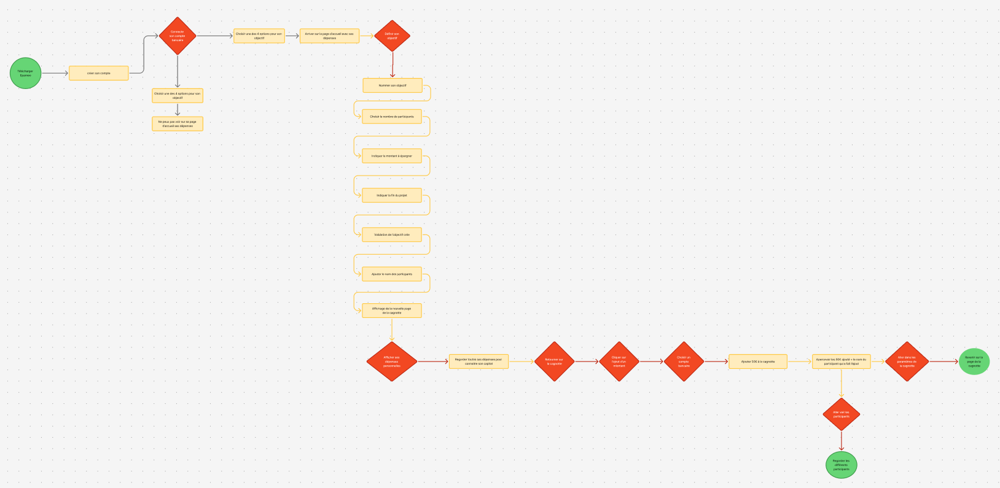
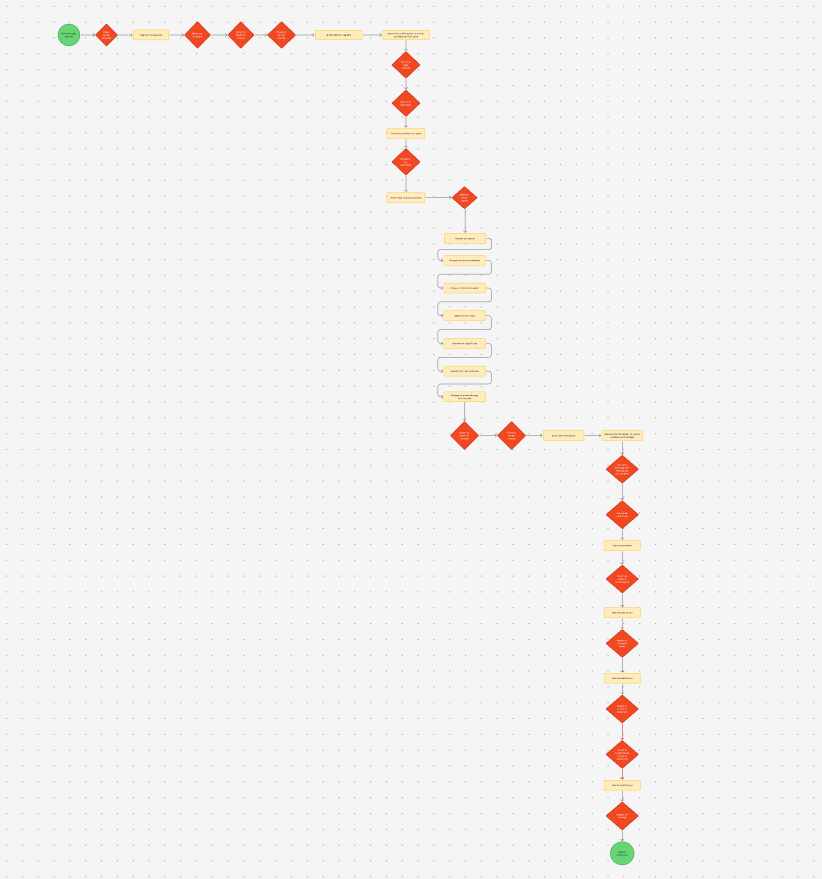
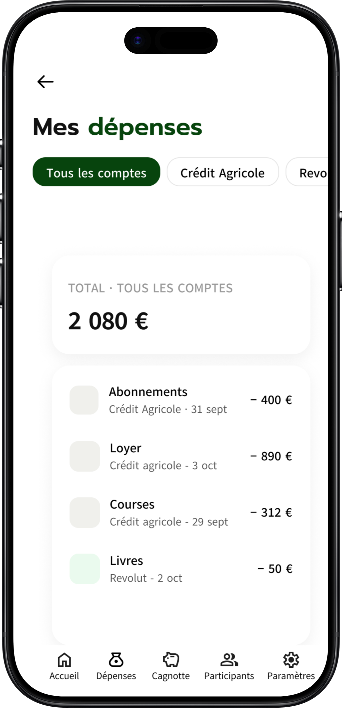

EPARNEO
Project overview
Eparneo est un produit fictif conçu dans le cadre de la certification Google UX Design. La formation permet d'apprendre à suivre les 5 principes du design afin de produire des mockups d'applications et sites web réactifs. Chaque livrable est produit par mes soins.
Le projet ne repose ni sur des utilisateurs réels ni sur des indicateurs d'usage : aucun chiffre de performance ne sera présenté, faute de données existantes.
N'ayant pas accès à un panel d'utilisateurs réels, j'ai construit un persona documenté, Justine, à partir d'un besoin observé — épargner à plusieurs pour un objectif commun — puis formulé des hypothèses sur ses objectifs et ses freins. J'ai ensuite testé ces hypothèses auprès de mon entourage à travers trois études d'utilisabilité modérées, en observant chaque participant réaliser les tâches clés du parcours. J'ai dessiné des wireframes papier, puis créé des maquettes basse fidélité et un prototype cliquable haute fidélité sur Figma. Enfin, j'ai pu valider les décisions de conception auprès des participants et confirmer qu'elles répondaient aux frictions observées. Le projet a duré trois mois. Examinons maintenant chaque étape plus en détail.

Le problème
Les personnes qui souhaitent épargner en commun pour un objectif précis, avec une gestion partagée n'ont pas d'applications. J'ai audité quatre applications de référence sur la gestion de budget personnel : Money Manager, Wally, Daily Budget et SayMoney. Toutes les quatre répondent au même besoin : suivre ses dépenses, les classer par catégorie, et visualiser un solde restant sur le mois. Aucune ne propose de cagnotte partagée entre plusieurs personnes, ni de mécanisme permettant à un groupe de faire converger de l'argent réel vers un objectif commun.
Le but
Permettre aux utilisateurs d'avoir une application qui
leur permet de gérer leur budget d'épargne via une plateforme dédiée.
Livrables
Rapport de recherche utilisateur, persona, parcours utilisateur, wireframes, prototypes.
Mon rôle
Product designer
Durée
3 mois
Outils
Plateforme Coursera, Figma.
User research
Eparneo est un projet fictif réalisé dans le cadre de la certification Google UX Design. N'ayant pas eu accès à un panel d'utilisateurs réels pour la phase de recherche, j'ai construit un persona documenté à partir d'un besoin observé autour de moi — épargner à plusieurs pour un objectif commun — puis j'ai formulé des hypothèses explicites sur les objectifs, freins et son contexte d'usage.
Pour suivre le processus d'une vraie étude de cas, j'ai créé un persona fictif, Justine, ainsi que son parcours utilisateur, pour illustrer le processus par lequel Justine passe, ses ressentis, son comportement et ce qu'elle pense quand elle atteint ses objectifs afin de résoudre les problèmes ou de lui procurer des moments de plaisir.
Persona
Parcours utilisateurs
| Étape | 1. Prendre conscience du besoin | 2. Installer et relier son compte | 3. Créer un objectif et inviter | 4. Faire le premier versement | 5. Tenir le rythme jusqu'à l'échéance |
| Actions | A. Constate qu'aucune économie n'a été faite cette année B. En parle au dîner avec son conjoint et sa sœur C. Cherche « épargner à plusieurs » sur son téléphone |
A. Télécharge Eparneo B. Crée son compte C. Autorise la connexion à son compte courant D. Découvre l'onglet Dépenses et son solde disponible |
A. Nomme l'objectif « Voyage à Majorque » B. Renseigne 4 participants C. Fixe 2 400 € et une échéance à 8 mois D. Envoie les invitations |
A. Consulte ses dépenses du mois B. Décide de verser 150 € C. Choisit le compte source D. Confirme le transfert E. Partage l'avancement au groupe |
A. Vérifie la cagnotte deux fois par mois B. Ajuste ses versements selon le mois C. Voit qui a participé D. Atteint l'objectif et clôture |
| Ressenti | Découragée. « Encore une année sans partir. » Elle a l'impression que l'épargne demande une rigueur qu'elle n'a pas, et que le sujet crée des tensions dans le groupe. | Méfiante puis rassurée. Relier son compte bancaire l'inquiète. Mais voir son solde et ses dépenses réelles dans l'app lui donne enfin un repère concret. | Motivée. Le projet devient réel dès qu'il a un nom et une date. Elle apprécie de ne pas avoir à imposer un montant à chacun. | Fière et légitime. Verser 150 € qu'elle sait pouvoir se permettre lui procure plus de satisfaction qu'un objectif imposé. Elle est la première à participer. | Vigilante. L'enthousiasme retombe au troisième mois. Elle craint d'être la seule à alimenter et hésite à relancer les autres. |
| Opportunités | Se positionner sur « épargner ensemble », pas sur « gérer un budget » Message clair : chacun verse ce qu'il veut |
Expliquer pourquoi la liaison bancaire est nécessaire, avant de la demander Permettre de visiter l'app avant de connecter Afficher le solde disponible dès l'accueil |
Une question par écran, aucun scroll Suggestions d'objectifs pour démarrer plus vite Rappeler que tout reste modifiable ensuite |
Afficher le solde à venir dans l'onglet dépenses, consultable à tout moment Laisser l'utilisateur décider seul de son montant, sans suggestion ni montant par défaut |
Relance automatique du groupe, pour qu'elle n'ait pas à le faire Jalons à 25 / 50 / 75 % Versement récurrent optionnel Vue « qui a versé quoi » sans classement |
J'ai mené trois études d'utilisabilité modérées, en observant chaque participant réaliser les tâches clés du parcours : créer un objectif, effectuer un versement pour la cagnotte, naviguer sur l'application, créer un second objectif. Grâce à ces sessions de test, j'ai pu créer puis itérer mes décisions de conception.
J'ai fait le choix d'une démarche qualitative : sur un échantillon restreint, comprendre pourquoi un utilisateur hésite, a plus de valeur que mesurer combien hésitent. Chaque friction relevée a été traduite en une modification traçable lors de la phase de wireframing, ce qui m'a permis d'itérer sur des faits d'observation plutôt que sur des préférences esthétiques.
Wireframes papier
J'ai pris le temps de dessiner 3 interfaces différentes pour la page d'accueil. La première photo représente les pages qu'il est possible de retrouver dans les différents onglets de l'application ; la deuxième photo montre les 2 pages supplémentaires lorsqu'une personne demande à ajouter un montant ou ajouter un participant.
J'ai utilisé le dernier modèle de la dernière photo pour le reproduire sur Figma et ainsi faire ma page d'accueil.
Lo-fi prototype
J'ai créé mon prototype basse fidélité au stylo et papier pour permettre des itérations rapides. Suite à ces wireframes papiers, je les ai maquettés sur Figma et je l'ai fait tester une première fois.
 Voir le prototype lo-fi ↗
Voir le prototype lo-fi ↗
Résultats des études d'utilisabilité
Après avoir mené mes tests d'utilisabilité sur le prototype lo-fi, j'ai réalisé une seconde étude d'utilisabilité afin de valider mes itérations. Ce second tour de tests m'a permis d'affiner les parcours et de les faire aboutir au prototype final hi-fi présenté ci-dessous.
Flux utilisateurs 1
J'ai créé un flux de tâches pour le parcours numéro 1, que devaient suivre les personnes à qui j'ai fait passer les tests finaux d'utilisabilité.

Voir le user flow ↗Hi-fi prototypes

Flux utilisateurs 2

Voir le user flow ↗
Quelques écrans du prototype hi-fi final, après les tests du second tour d'utilisabilité.



Conditions d'accessibilité
Toutes les animations sont à 800ms pour rester perceptibles sans ralentir l'usage, conformément aux recommandations WCAG sur le mouvement.
Contrastes vérifiés avec le plugin Stark (Contrast & Accessibility Checker). Tous les couples texte/fond atteignent le niveau AAA (11.4:1 et 9.8:1).
Hiérarchie typographique claire (titres en 30px, texte courant en 16px, texte descriptif en 14px). Boutons dimensionnés pour la préhension tactile, et barre de menu annotée pour guider la navigation.
Réflexions après coup
Ce projet a été une expérience particulièrement enrichissante dans mon apprentissage de l'UX Design. De la recherche utilisateur à la conception des maquettes finales, chaque étape m'a permis de mieux comprendre l'importance de concevoir une expérience à partir des besoins réels des utilisateurs, plutôt que de se fier uniquement à ses propres intuitions.
La création de cette application d'épargne en groupe m'a notamment permis de mettre en pratique différentes méthodes UX : recherche utilisateur, personas, parcours utilisateur, wireframes et prototypage. J'ai également pu prendre conscience de l'importance de faire évoluer une idée au fil du processus de conception, en remettant régulièrement en question mes premiers choix.
Ce projet m'a surtout appris qu'une bonne interface ne se résume pas à un visuel esthétique. La simplicité du parcours, la compréhension des informations, l'accessibilité et la confiance de l'utilisateur sont tout aussi importantes. Même de petites améliorations dans la structure ou l'affichage des informations peuvent rendre une expérience beaucoup plus claire et intuitive.
Remarque : Eparneo est un projet fictif réalisé dans le cadre de la certification Google UX Design, sans lien avec une entreprise existante.
Ouverte aux opportunités en région parisienne comme à distance.